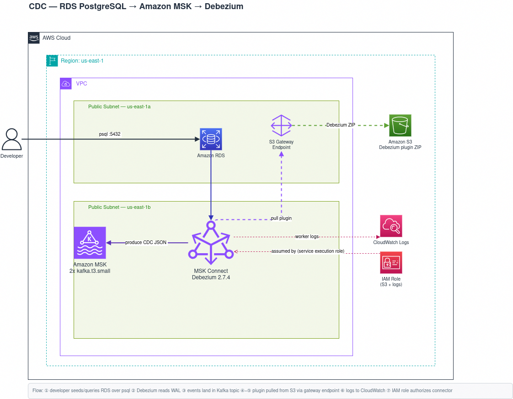

Change Data Capture Pipeline
A real-time CDC pipeline defined entirely in Terraform: every INSERT / UPDATE / DELETE on RDS PostgreSQL is streamed into Amazon MSK (Kafka) by a Debezium connector running on MSK Connect — read straight from the database write-ahead log, no application code and no polling.
Turn a database into a stream of events. Instead of polling a table asking "what changed?", CDC reads the database's own transaction log (the PostgreSQL write-ahead log) and emits one event per row change — operation type (c create, u update, d delete, r snapshot) plus the before/after row values. Debezium reads the log, Kafka carries the events, any consumer subscribes; the source database does no extra work beyond what it already writes to its WAL. The whole stack stands up from a single terraform apply and tears down just as cleanly.
Log-Based, No Polling
Debezium reads the Postgres WAL via logical replication and emits one event per row change — sub-second, no schedule, no load on the source from polling queries.
Decoupled Modules
Five independent Terraform modules — networking, iam, rds, msk, msk_connect — each handing one value to the next. The graph wires RDS↔MSK↔Connect with zero manual config.
No NAT, Cost-Conscious
An S3 gateway endpoint (free) lets MSK Connect pull the Debezium plugin with no NAT Gateway or internet egress. A self-referencing security group replaces per-port rules.
100% Infrastructure as Code
VPC, RDS parameter group, Kafka cluster, plugin build, and connector all declared in Terraform. The plugin ZIP is even fetched from Maven and uploaded at apply time.
source
- Amazon RDS (PostgreSQL)
- Logical replication (WAL)
- Custom parameter group
- Replication slot + publication
streaming
- Amazon MSK (Kafka)
- MSK Connect
- Debezium Postgres connector
- Kafka Connect (topic.creation.*)
platform
- Terraform (IaC)
- Dedicated VPC + subnets
- S3 gateway endpoint
- IAM (scoped exec role)
- CloudWatch Logs
One dedicated VPC: RDS PostgreSQL feeds MSK Connect (Debezium), which streams into the Amazon MSK cluster. The connector plugin is pulled from S3 over a gateway endpoint, and worker logs land in CloudWatch.

networking — the isolated VPC
Nothing touches the account default VPC, so terraform destroy removes everything cleanly.
- Dedicated VPC —
10.20.0.0/16with two public subnets across two AZs (MSK and the RDS subnet group both require multi-AZ). - Self-referencing security group — one SG shared by RDS, MSK, and Connect; anything inside the SG can reach anything else, no per-port rules.
- S3 gateway endpoint — free; lets MSK Connect download the Debezium plugin with no NAT Gateway or internet egress.
rds — the source database
The switch that makes CDC possible lives here.
- Logical replication — a custom parameter group sets
rds.logical_replication = 1(→wal_level = logical). Without it, the WAL isn't readable by Debezium. - Pending-reboot apply — the parameter uses
apply_method = pending-reboot; the instance reboots once before the replication slot can be created.
msk — the event backbone
Kafka carries the change events to any number of consumers.
- kafka.t3.small — the smallest MSK broker; the console blocks it, so it must be provisioned via API / Terraform.
- No auto-create topics —
auto.create.topics.enable = false; the connector creates its own topics instead, with replication factor matching the broker count.
msk_connect — the CDC engine
Where the actual capture runs — built and registered at apply time.
- Plugin built on apply — a
local-execprovisioner fetches the Debezium tarball from Maven, repacks it as a flat ZIP, and uploads it to S3, where it's registered as a custom plugin. - The connector — runs the plugin against the RDS host + MSK brokers, opens a logical replication slot named
debezium, auto-creates a filtered Postgres publication, and streams changes. - Topic shape — emits to
{topic_prefix}.{schema}.{table}; the defaults give a single topicrds.public.users, self-created via Kafka Connect'stopic.creation.*config.